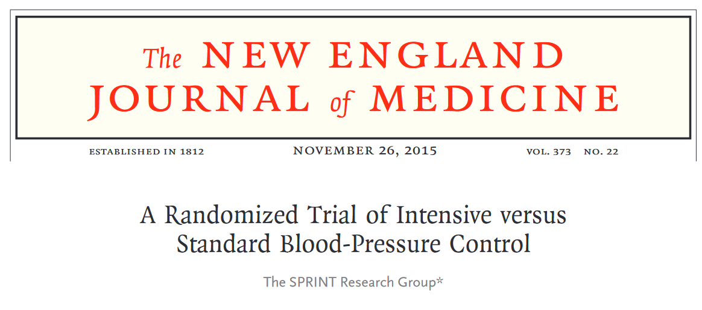
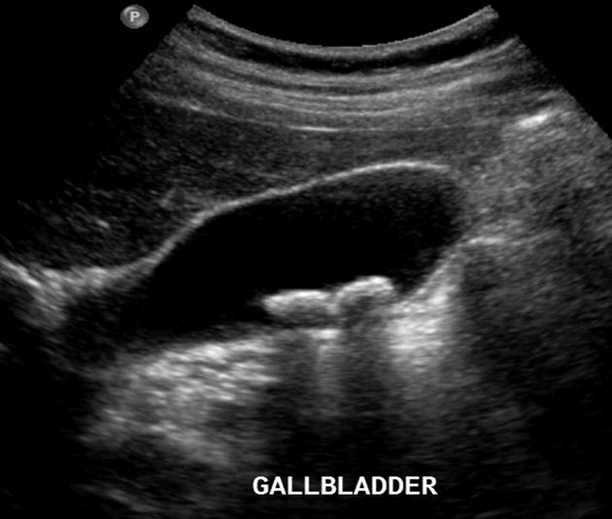
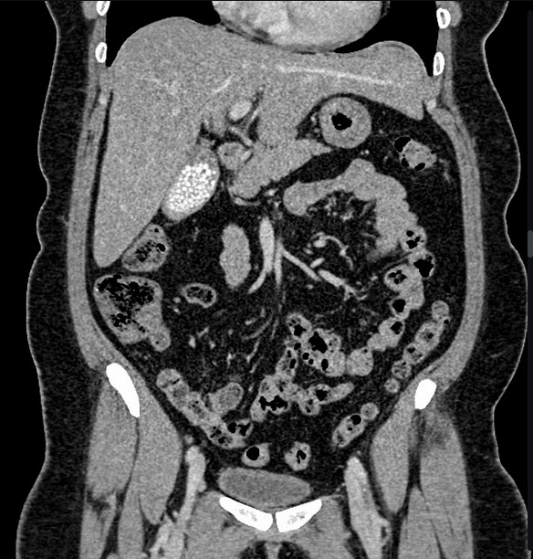
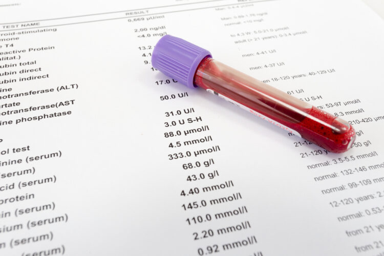
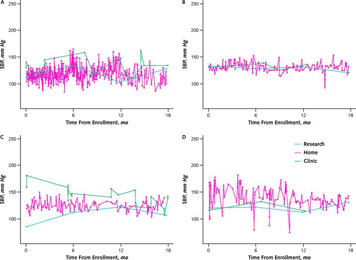
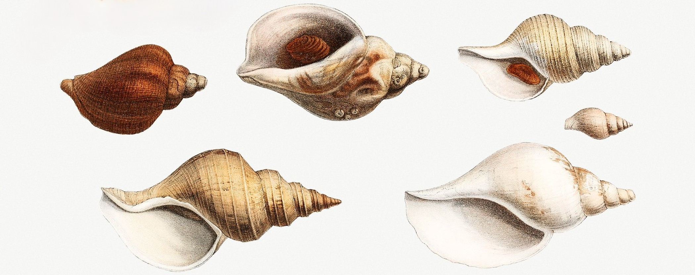
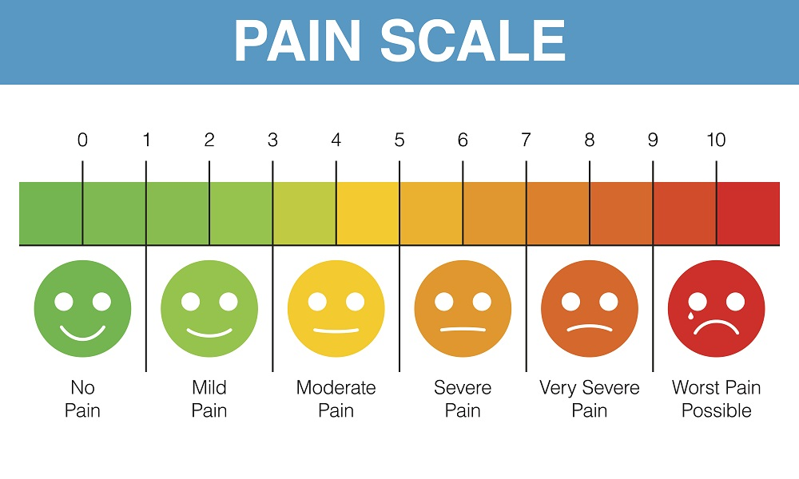
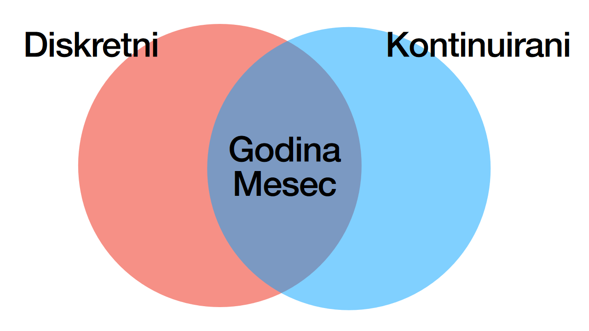
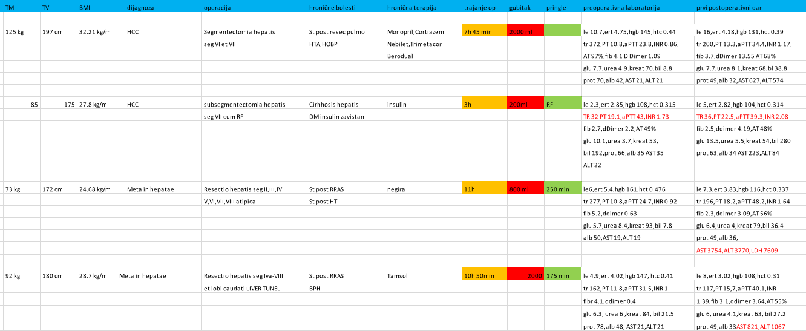

Uvod u Statistiku
2024-05-27
Čime se bavi statistika u medicini?
- Naučnim metodom
- Otkrivanje veličine efekta terapije (lek, intervancija)
- Predviđanje rizika (npr. od tromboze)
- Medicinskim odlučivanjem (preciznost medicinskih testova)
Efekat terapije pritiska
 Na osnovu čega je preporuka postavljena? Da li ona ima smisla?
Predviđanje rizika

Da li je za najveći deo rizika hemoragičnog moždanog udara odgovoran pulsni pritisak ili sistolni pritisak?
Koliko je ultrazvuk bolji u otkrivanju žučnog kamenja od CT-a?


Laboratorijske vrednosti
Da li ovaj pacijent sa ovom laboratorijskom vrednošću ima rizik od bolesti koji zahteva dodatnu istragu?

Kurs
- Lekcija (\(\gt\) 50% \(\rightarrow\) otvara kviz)
- \(\text{Bodovi} = \text{lekcija} + \text{kviz (vremenski ograničen)} + \text{kolokvijum} + \text{ispit}\)
- Ispit (praktični i teorijski deo; u učionici na kompijuterima)
Struktura kursa
| Nedelja | Tema |
|---|---|
| 1 | Uvod u medicinsku statistiku |
| 2 | Sređivanje podataka |
| 3 | Statističko opisivanje podataka |
| 4 | Verovatnoća i raspodele verovatnoća |
| 5 | Populacija i uzorak |
| 6 | Testiranje hipoteza o populacionim prosečnim vrednostima i proporcijama |
| 7 | Testiranje hipoteza o učestalostima |
| 8 | Testiranje hipoteza o rangovima |
| 9 | Korelacija |
| 10 | Regresija / Kolokvijum |
| 11 | Podaci, informacije i znanje |
| 12 | Zdravstveni informacioni sistem |
| 13 | Mere dijagnostičke tačnosti |
| 14 | Medicinsko odlučivanje |
| 15 | Bioinformatika |
Kritično stanje nauke u medicini
“The case against science is straightforward: much of the scientific literature, perhaps half, may simply be untrue. Afflicted by studies with small sample sizes, tiny effects, invalid exploratory analyses, and flagrant conflicts of interest, together with an obsession for pursuing fashionable trends of dubious importance, science has taken a turn towards darkness.”
Definicija
Statistika je nauka o odlučivanju
u uslovima nesigurnosti
Osnovni pojmovi
%%{ init: { 'flowchart': { 'curve': 'monotoneX' } } }%%
%%| fig-align: center
flowchart LR
A[Osnovni skup] --> B[Uzorak]
B --> C[Jedinica posmatranja]
C --> D[Varijable]
D --> E[Merenje]
E <--> TT["Tačnost\nPreciznost\nPouzdanost\nValjanost"]
TT <--> F
E <--> TP["Tip podataka"]
TP <--> F
E --> F[Podaci]
F --> G[Analiza]
G --> H[Zaključak]
H -->|generalizacija|A
Istraživačko pitanje
Definisanje istraživačkog pitanja (engl. estimand) je nešto što je najviše zaboravlja kad se osmišlja rad.
%%{ init: { 'flowchart': { 'curve': 'monotoneX' } } }%%
%%| fig-align: center
flowchart TD
I[Istraživačko pitanje] -.-> A
A[Osnovni skup] --> B[Uzorak]
B --> C[Jedinica posmatranja]
C --> D[Varijable]
Primer: istraživačko pitanje
%%{ init: { 'flowchart': { 'curve': 'monotoneX' } } }%%
%%| fig-align: center
flowchart TD
I[Istraživačko pitanje] -.-> A
A[Osnovni skup] --> B[Uzorak]
B --> C[Jedinica posmatranja]
C --> D[Varijable]
%%{ init: { 'flowchart': { 'curve': 'monotoneX' } } }%%
%%| fig-align: center
flowchart TD
I["Da li je stepen degeneracije\nlumbosakruma na radiografiji\npovezan sa bolom?"] -.-> A
A[Pacijenti sa lumboishialgijom] --> B[n pacijenata]
B --> C[Pacijent]
C --> D["Stepen degeneracije, bol"]
Prva baza podataka
| study_id | treatment | gum_rot_d6 | skin_sores_d6 | fit_for_duty_d6 |
|---|---|---|---|---|
| Beleške: Skraćena baza originalnih podataka prikupljenih od strane Džejms Linda; d6, na dan 6. | ||||
| 001 | cider | 2_moderate | 2_moderate | 0_no |
| 002 | cider | 2_moderate | 1_mild | 0_no |
| 003 | dilute_sulfuric_acid | 1_mild | 3_severe | 0_no |
| 004 | dilute_sulfuric_acid | 2_moderate | 3_severe | 0_no |
| 005 | vinegar | 3_severe | 3_severe | 0_no |
| 006 | vinegar | 3_severe | 3_severe | 0_no |
| 007 | sea_water | 3_severe | 3_severe | 0_no |
| 008 | sea_water | 3_severe | 3_severe | 0_no |
| 009 | citrus | 1_mild | 1_mild | 0_no |
| 010 | citrus | 0_none | 0_none | 1_yes |
| 011 | purgative_mixture | 3_severe | 3_severe | 0_no |
| 012 | purgative_mixture | 3_severe | 3_severe | 0_no |
Merenje
- Način merenja je jako bitan
- Preciznost, pouzdanost, validnost, podaci koji nedostaju

Pikasov crtez psa.
Odgovori pacijenata na merenje pritiska
Vrste podataka
Podaci se sastoje od varijabli. Varijabla predstavlja meru neke pojave.
- Kvalitativni (opisuju pojavu)
- Kvantitativni (dodeljuju numeričku vrednost)
Bitno
“Koja je vaša omiljena hrana?”, na šta su odgovori: grožđe, čokolada, karbonara, pica i mango. Ovi podaci nisu numerički; ali im često dodeljujemo brojeve (1 = grožđe, 2 = čokolada, itd.), međutim u ovom slučaju brojeve koristimo kao oznake, ne kao prave vrednosti.
Kvalitativni podaci
| Koji vam je omiljeni predmet? | Broj učenika |
|---|---|
| Patologija | 105 |
| Statistika | 20 |
| Patofiza | 4 |
Beleška
Primetiti da su odgovori studenata kvalitativni, ali smo ih sumiranjem pretvorili u kvantitativne.
Tipovi brojeva
- Binarni brojevi (Da/Ne; 1/0;
TRUE/FALSE) - Celi (\(\mathbb Z\)) brojevi (“Koliko se slažete na skali od 1 do 7?”)
- Realni (\(\mathbb R\)) brojevi (najčešći, \(3.12...\), \(9.81...\))
Diskontinuirana (diskretna) i kontinuirana merenja
- Diskontinuirano (diskretno) merenje (podatak) je ono koje je kvalitativno ili se može izraziti preko celog broja
Broj porođaja: 3, nema nikakvog smisla pričati o 3.5 porođaja!
- Kontinuirano merenje je ono koje se izražava pomoću realnog broja
Kada merimo težinu u \(kg\) obično zaokružujemo, ali ima smisla pričati o preciznijim merenjima (\(70 \; \text{kg}\), \(70.3467 \; \text{kg}\)).
Merne skale (1)
Varijable moraju da imaju barem dve vrednosti (inače bi bile konstante).
Vrednosti varijable imaju različite odnose:
- Identitet: Svaka vrednost je jedinstvena.
- Veličina (magnituda): Neke vrednosti su veće od drugih.
- Jednaki intervali: Razlika između 1 i 2 je iste veličine kao 19 i 20.
- Apsolutna nula: Skala ima nulu koja znači nešto.
Merne skale (2)
- Nominalna skala (identitet; 1 - Dijabetes, 2 - Hipertenzija)
- Ordinalna skala (identitet i veličina; 1 - Primarno obrazovanje, 2 - Srednja škola)
- Intervalna skala (identitet, veličina, i jednaki intervali; Celsius, Fahrenheit)
- Ratio skala (sve + apsolutna nula; Kelvin, visina, težina)
| Skala | Jednako/nije jednako | >/< | +/- | Množenje/deljenje |
|---|---|---|---|---|
| Nominalna | OK | |||
| Ordinalna | OK | OK | ||
| Intervalna | OK | OK | OK | |
| Ratio | OK | OK | OK | OK |
Nominalni podaci
- Jedinstvene vrednosti
- Nemaju minimum ni maksimum
- Nemaju red
Ordinalni podaci
- Diskretni (celi brojevi)
- Definisan minimum i maksimum
- Definisan red
- “Udaljenost” između kategorija je nepoznata
Numerički podaci

- Diskontinuirani su samo celi brojevi
- Kontinuirani mogu biti proizvoljno precizni
Upozorenje
Ordinalni i diskontinuirani podaci mogu da liče. Razlikuje ih to što su brojevi kod ordinalnih podataka samo obeležja, ne prave vrednosti. Kontinuirani i diskontinuirani podaci mogu da liče ako se zaokruže (50kg, 60kg, 75kg), ali uvek imamo opciju da ih prikažemo preciznije.
Ko zna zna (podatak)?
- ABO
- Bol (NRS 0-10 skala)
- M/Ž
- Stadijum (I-IV)
- TA (mmHg)
- Srčana fr (otk/min)
- Starost
- Nominalni
- Ordinalni
- Nominalni (binarni)
- Ordinalni
- Numerički (kont.)
- Numerički (diskretni)*
- Numerički (kont.)
Šta ćemo sa vremenom?
Principi sređene baze (tidydata)

uh…
Kako se pravi baza u Excel-u
Zadatak?
Česte greške u pravljenju baza
Granularni podaci (razdvajanje)

Granularni podaci (spajanje)

Ponovljenje kolone (neprepoznate varijable)

Ponovljena merenja (lakše upisivanje)

Zadatak: vremesnke serije
Napravi bazu kako bi:
- Poredili vrednosti sistolnog pritiska između dijabetičara i zdravih ljudi?
- Poredili vrednosti glukoze između istih pacijenata pre i posle terapije?
- Pratili pacijente da saznamo ko je imao recidiv posle operacije?
- Upisali CRP meren serijski u intervalu: 1h, 12h, 24h?
Teško (opcionalno)
- Merili vreme do tromboze između pacijenata koje lečimo agresivno i konzervativno.
- Merili vreme do tromboze ako pratimo vrednosti d-Dimera serijski 3 dana za redom.
Podaci koji nedostaju
| pacijent | intervencija | ishod |
|---|---|---|
| Petar Petrovic | 1 | 7 |
| NA | 2 | 10 |
| NA | 3 | NA |
| Katarina Katarinovic | 1 | 4 |
- Ostaviti prazno (moguće greške)
- Upisati NA